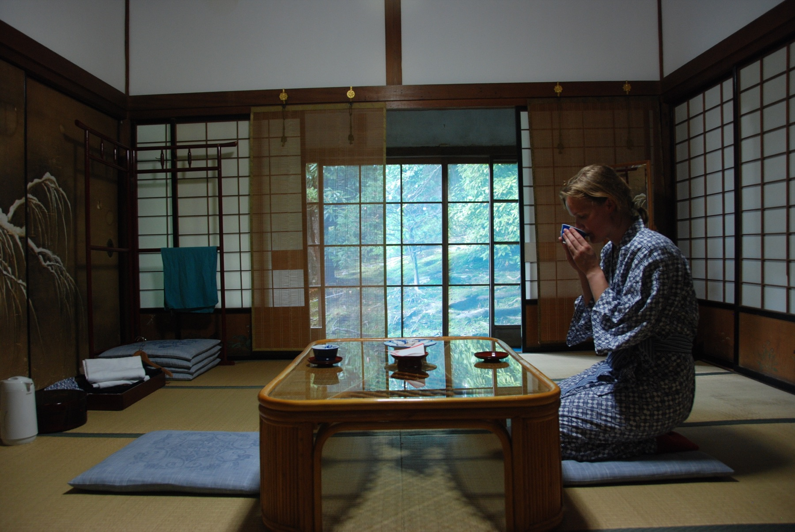

Japan with
Japan with

At midnight, Japan can offer you four radically different doors. One slides across a sleeping pod. One opens after a dinosaur receptionist directs you to a screen. One leads to a reclining chair surrounded by tens of thousands of comics. One closes inside a Buddhist temple where breakfast may follow morning prayers. All can become a bed for the night. Only some behave like the hotel you already know.
That difference matters. “Japan’s weird hotels” are often presented as a parade of inventions. In reality, each format solves a different problem: expensive urban space, labor-intensive service, the missed last train, or a pilgrim’s need for shelter. The surprise is not that Japan built eccentric rooms. It is that a country with exacting service culture also became unusually good at deciding which parts of a room a guest can live without.
1. Capsule hotels: the room becomes a piece of furniture
The first capsule hotel, Capsule Inn Osaka, opened in 1979 with pods designed by architect Kisho Kurokawa. The original building has closed, but its central proposition spread: the sleeping space can be reduced to the dimensions of a bed if bathing, luggage and circulation move into shared zones. That is why a capsule is better understood as a private sleeping compartment inside a communal hotel than as a tiny conventional room.
Modern versions range from retro rows of molded pods to quiet, design-conscious cabins with high ceilings and lounge space. Some provide floors or facilities separated by gender; some remain men-only; others offer women-only areas or mixed options. A curtain or blind commonly closes the pod rather than a lockable door, because the unit may be regulated and operated differently from a normal guest room. Large luggage normally goes in a locker or staffed storage area.
Choose one for a one-night solo stop, an early flight or the experience itself. Avoid it if you are a light sleeper, need to work privately, have limited mobility, travel with children, dislike communal bathrooms or need quick access to a large bag. Check the property’s gender policy, tattoo rules for shared baths, checkout time and whether you must vacate the pod each day on a multi-night booking. Earplugs help; an alarm that vibrates is kinder than one that wakes the corridor.
2. Robot hotels: the strange part is what humans still do

Henn na Hotel opened at Huis Ten Bosch in Nagasaki Prefecture on July 17, 2015 and received Guinness World Records recognition as the first robot-staffed hotel. The Japanese name is a useful joke: hen can mean strange, but the brand also frames it as continuous change. Today the chain operates properties across Japan and beyond, with the exact technology varying by location. Some greet guests with dinosaurs or humanoid figures; others emphasize projection characters, automated check-in, clothing-refresh machines or themed rooms.
The robots are the visible layer, not a promise that no human exists. People clean rooms, resolve identity or payment problems, maintain machines and respond when automation fails. Even the official Tokyo Ginza page says robots and human staff welcome guests. That makes the hotel more interesting than the old “robots replaced everyone” headline. Automation works best on predictable exchanges; hospitality becomes human again at the moment a trip stops being predictable.
Book for the playful arrival, not because you expect a science-fiction butler. Confirm what the specific branch actually offers: a photo from Maihama does not describe Ginza, Nara or Kyoto. Keep your passport and reservation name ready for self check-in, and note the support method if the machine cannot find the booking. Room size, breakfast and luggage policies matter more to comfort than the receptionist’s species.
3. Manga cafés: you can sleep there, but do not call it a hotel
A manga kissa is a time-based café built around comics, internet access and private or semi-private booths. Many 24-hour branches sell overnight packages and add reclining seats, flat “mat” booths, showers, drinks and sometimes laundry. For a traveler who missed the last train, the combination can look like instant accommodation without an advance reservation.
Here is the article’s most important distinction: a night pack does not turn every internet café into licensed hotel accommodation. You are purchasing use of a seat or booth for a block of time. Sound carries, lights may remain on, valuables need care, showers may cost extra or have queues, and a booth may not lock or fully close. Local rules and individual chains can require identification. Youth access at night is restricted by prefectural ordinances; Kyoto, for example, prohibits most under-18 entry to manga and internet cafés from 11 p.m. to 4 a.m.
The manga library may be enormous but mostly Japanese, which can be a delight rather than a defect. Learn the signs ナイトパック (night pack), シャワー (shower) and 鍵付き個室 (lockable private room). For free, no-signup practice before the trip, Japanese Training Lab helps make those small encounters less opaque. DraMap, Yuji’s iOS game, offers a more playful way to keep learning.
4. Shukubo: the oldest “unusual hotel” was never built as a novelty

Shukubo are lodgings historically associated with temples, shrines and pilgrimage routes. JNTO notes that temples have welcomed pilgrims and other guests for more than 1,000 years, and that many stays now accept visitors of any faith. Mount Kōya is the best-known concentration: the official Koyasan Shukubo Association provides a reservation service and current availability rather than asking travelers to guess which religious buildings take overnight guests.
A typical stay may include a tatami room, futon bedding, vegetarian shojin ryori meals and an invitation to early-morning worship. “Typical” is doing work here. Bathrooms may be shared or private; buildings may be historic or modern; English support, alcohol policies, curfews, heating and accessibility vary sharply. Morning practice is not a stage show created for tourists. Participate quietly if invited, follow photography rules and do not assume every corridor, altar or ceremony is open.
A temple stay can be more comfortable than the word “ascetic” suggests, but the schedule is the point. Dinner may be early and the gate may close at night. Mount Kōya is also high and can be cold outside summer. Tell the booking desk about dietary needs before arrival, while recognizing that a temple kitchen may not be able to guarantee every allergy protocol. Arrive before the stated check-in deadline; this is not the night to improvise after the last bus.
So which strange night should you book?
| Stay | What you actually buy | Best for | Check first |
|---|---|---|---|
| Capsule hotel | A private sleep pod plus shared facilities | Solo, one night, central location | Gender policy, lockers, baths, noise |
| Robot hotel | A standard hotel room with automated touchpoints | Couples, families, playful check-in | Branch-specific robots and support |
| Manga café | Time in a booth—not necessarily lodging | Missed train or emergency fallback | ID, security, shower, youth restrictions |
| Shukubo | Lodging inside a living religious setting | Reflection, culture, slow travel | Schedule, meals, baths, access, etiquette |
The wrong choice is the one booked only for a photograph. A capsule becomes exhausting when privacy is the need. A robot desk disappoints if you expected every task to be automated. A manga café is poor value when sleep matters the next day. A temple loses meaning when treated as themed accommodation.
The right choice reveals something a normal room hides. Capsule hotels show how shared infrastructure can make private space smaller. Robot hotels show where automation meets the stubborn complexity of care. Manga cafés show how a leisure business became an unofficial urban safety net. Shukubo show that hospitality in Japan did not begin with the modern hotel at all.
Sources and booking checks
- Japan National Tourism Organization — Capsule Hotels
- Guinness World Records — First robot-staffed hotel
- Henn na Hotel — official booking site and property list
- Henn na Hotel Tokyo Ginza — robots and human support
- JNTO — Temple Stays
- Koyasan Shukubo Association — official reservation service
- Kyoto Prefecture — late-night youth rules for manga and internet cafés
- Japan Foundation — everyday Japanese lesson on manga cafés
Availability, prices, services and rules change by property. Operational details were checked November 6, 2026; confirm the official property page before booking. Businesses are examples, not sponsors. Selections and comparisons are Japan Unfolded’s editorial judgment.

See the streets beyond the hotel door.
Walk through real Japan with Yuji on TikTok LIVE, then learn Japanese while playing DraMap for iPhone.
Japan Unfolded is independently edited by Yuji Shimizu, creator of DraMap. The app link is publisher promotion; travel recommendations remain editorial.